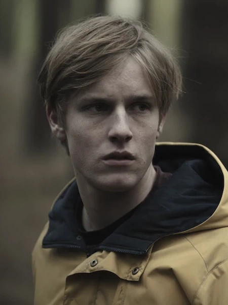

Jonas Kahnwald
Protagonista de la historia. Viaja en el tiempo y se convierte en su versión futura: Adam.

La serie DARK cuenta con una gran cantidad de personajes, entrelazados a lo largo del tiempo y el espacio. Cada uno cumple un rol fundamental en el desarrollo de la historia, pero en esta sección te presentamos a los más importantes: aquellos cuyas decisiones y vínculos tienen un impacto directo en el ciclo y el destino de Winden.
Protagonista de la historia. Viaja en el tiempo y se convierte en su versión futura: Adam.

Su historia está ligada a Jonas. En el mundo alternativo, ella es la viajera.
Policía y padre de Martha, Magnus y Mikkel. Intenta salvar a su hijo perdido.
Científica que lucha por romper el ciclo del tiempo.
Religioso y viajero del tiempo. Forma parte del conflicto central en Winden.

Jefa de policía, madre de Elisabeth. Su historia es una paradoja temporal.
Hija de Charlotte. Vive en el mundo postapocalíptico y es parte de una paradoja familiar.
Amigo de Jonas que se une a Sic Mundus. Tiene un rol clave en el pasado.